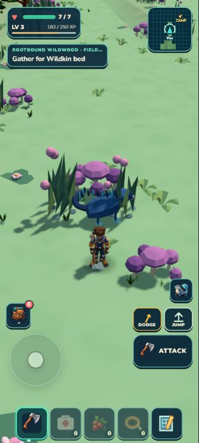
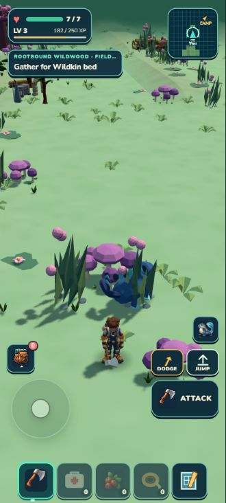
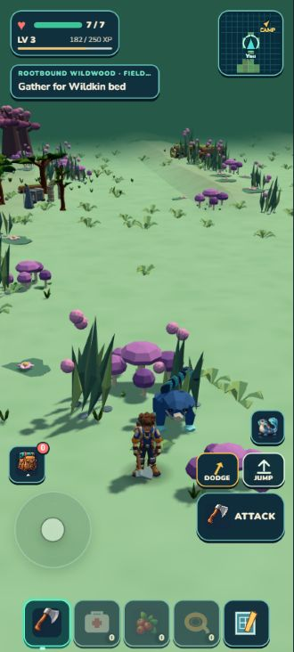
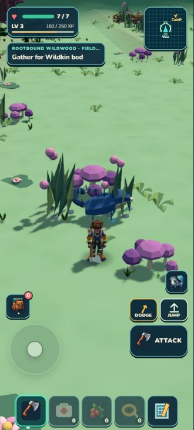
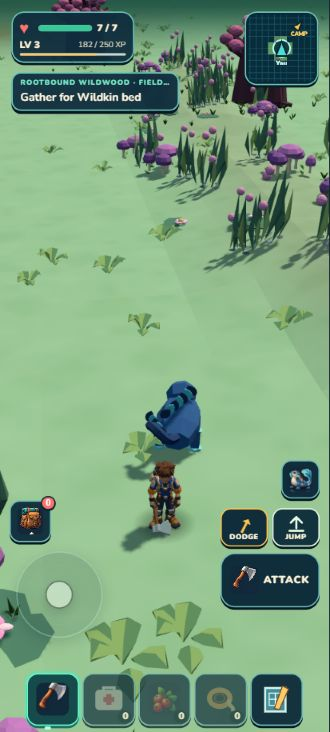
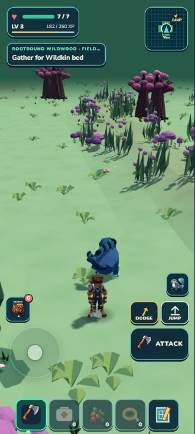
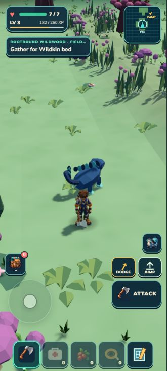
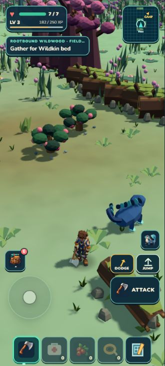
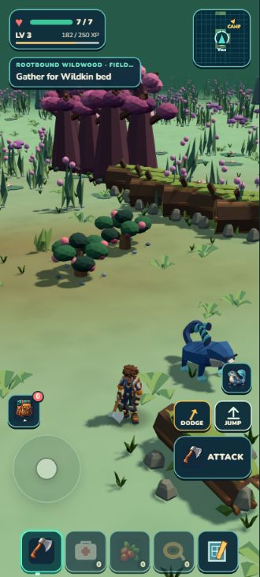
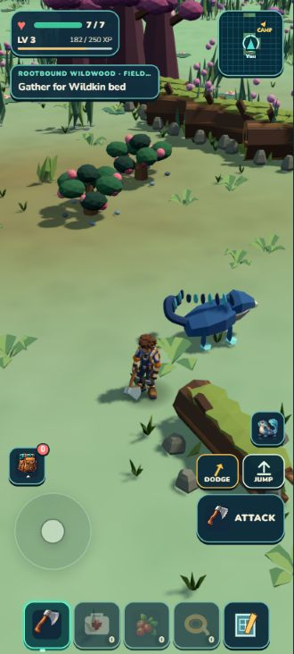

ACTUAL SCENERY · TEMPORARY CAMERA STUDY · NO RUNTIME CAMERA CHANGE
What the portrait camera reveals
The same retained region, player scale and HUD, viewed through four framing options. The lower angle reveals more distance but also more empty horizon. The independent review selects C, the simpler 32-degree pitch using existing orbit controls. It retains enough added visibility without a projection change. The current default remains unchanged.
Independent visual selection · Technical feasibility · Study scope · Retained playable blockout
Orientation Meadow

Current: centered, 36°
A: player 12% lower, 36°
B: player 12% lower, 28°
C: centered, 32°Root Galleries
 Current: centered, 36°
Current: centered, 36°
A: player 12% lower, 36°
B: player 12% lower, 28°
C: centered, 32°Heartroot Crown
 Current: centered, 36°
Current: centered, 36°
A: player 12% lower, 36°
B: player 12% lower, 28°
C: centered, 32°Projection shifts apply only during the fixture render and restore afterward. These captures do not prove input picking, labels or camera obstruction for a shipped projection change. C uses the existing pitch control. Weather and moving companions are not time-locked. Asset experiments remain paused.